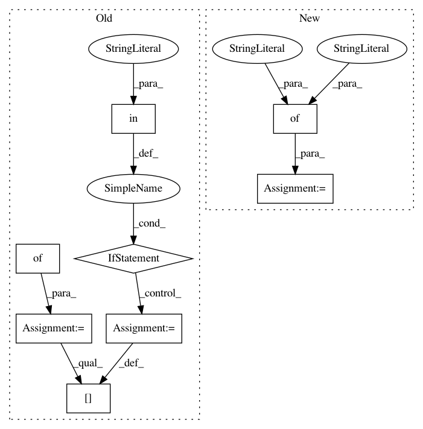

e2799c64b7b8248de872ca7fb741080079839710,onmt/translate/translator.py,Translator,_translate_batch,#Translator#Any#Any#Any#Any#Any#Any#,532
Before Change
src, enc_states, memory_bank, src_lengths = self._run_encoder(batch)
self.model.decoder.init_state(src, memory_bank, enc_states)
results = {}
results["predictions"] = None
results["scores"] = None
results["attention"] = None
results["batch"] = batch
if "tgt" in batch.__dict__:
results["gold_score"] = self._score_target(
batch,
memory_bank,
src_lengths,
src_vocabs,
batch.src_map if use_src_map else None
)
self.model.decoder.init_state(src, memory_bank, enc_states)
else:
results["gold_score"] = [0] * batch_size
// (2) Repeat src objects `beam_size` times.
// We use batch_size x beam_size
src_map = (tile(batch.src_map, beam_size, dim=1)
if use_src_map else None)
self.model.decoder.map_state(
lambda state, dim: tile(state, beam_size, dim=dim))
After Change
src, enc_states, memory_bank, src_lengths = self._run_encoder(batch)
self.model.decoder.init_state(src, memory_bank, enc_states)
results = {
"predictions": None,
"scores": None,
"attention": None,
"batch": batch,
"gold_score": self._gold_score(
batch, memory_bank, src_lengths, src_vocabs, use_src_map,
enc_states, batch_size, src)}
// (2) Repeat src objects `beam_size` times.
// We use batch_size x beam_size
src_map = (tile(batch.src_map, beam_size, dim=1)
In pattern: SUPERPATTERN
Frequency: 4
Non-data size: 8
Instances
Project Name: OpenNMT/OpenNMT-py
Commit Name: e2799c64b7b8248de872ca7fb741080079839710
Time: 2019-02-11
Author: dylan.flaute@gmail.com
File Name: onmt/translate/translator.py
Class Name: Translator
Method Name: _translate_batch
Project Name: OpenNMT/OpenNMT-py
Commit Name: e2799c64b7b8248de872ca7fb741080079839710
Time: 2019-02-11
Author: dylan.flaute@gmail.com
File Name: onmt/translate/translator.py
Class Name: Translator
Method Name: _translate_batch_deprecated
Project Name: gboeing/osmnx
Commit Name: cc2c3376832df749fc386f31621eff0b9babc1ea
Time: 2018-05-03
Author: henrikki.tenkanen@helsinki.fi
File Name: osmnx/pois.py
Class Name:
Method Name: create_poi_gdf
Project Name: gboeing/osmnx
Commit Name: d66cfb74ac8c3b55f9728b57230387466e69e7d1
Time: 2017-12-25
Author: henrikki.tenkanen@helsinki.fi
File Name: osmnx/pois.py
Class Name:
Method Name: create_poi_gdf